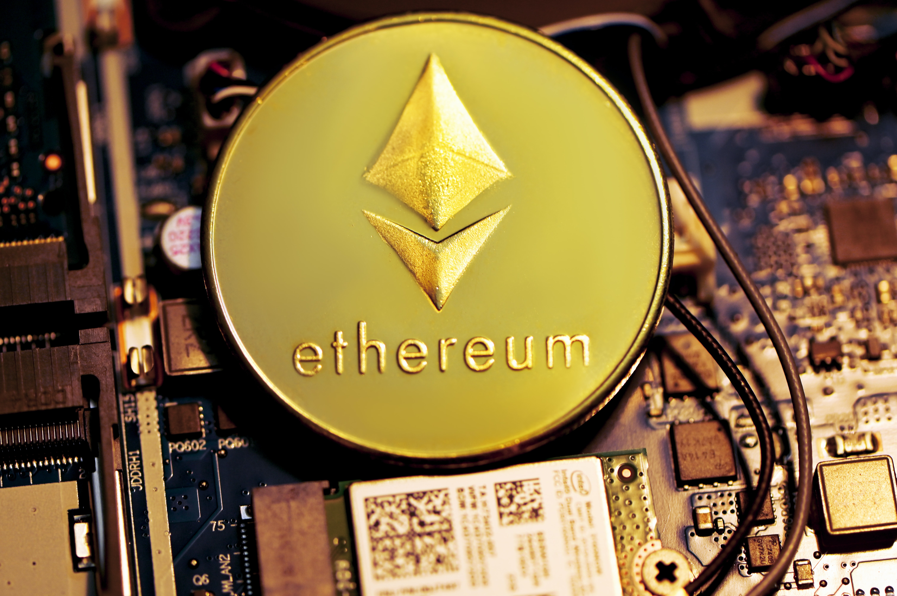
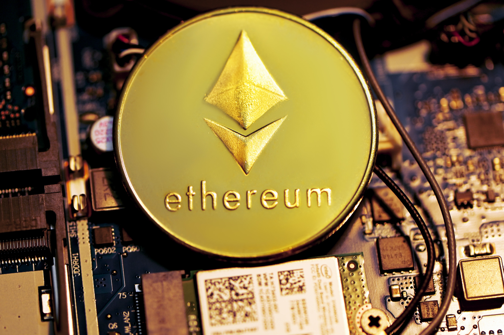
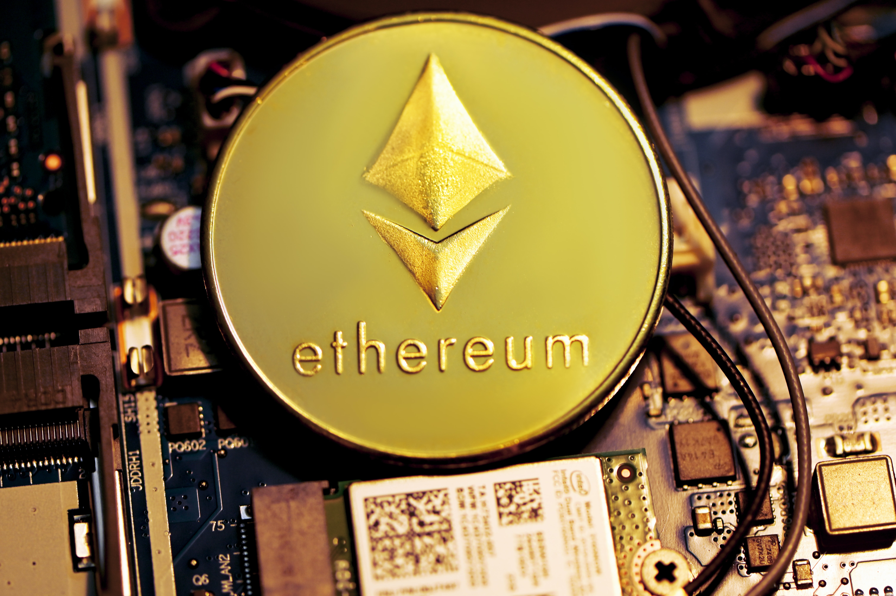

PICTURES THAT DESCRIBES ME!!!

 



I am a Mechanical Engineering Degree holder, always wanted to build a car on my own and I did that in my final year project with my teammates. I use to be a chubby guy throughout my childhood and later in my teenage and when I entered in the college I decided to change it and that’s how my fitness journey started. And I don’t remember when this fitness regime converted in to a passion which ultimately ended me winning a state level bodybuilding competition. Here my second big task completed. Now what???. I have heard BLOCKCHAIN but never got motivation to learn it. Now this is the time to learn it and add value to people’s life. Nobody I repeat Nobody can ever master BLOCKCHAIN so how can I ? but can update oneself , and that’s exactly I am doing……

As a blockchain consultant I researches, analyzes, develops, and tests blockchain technologies. This includes the documentation and maintenance of solutions, as well as their architectural integration with business logic. My goal is to translate business goals into technology roadmaps that clients can follow to achieve target outcomes. What makes me a valuable asset is my ability to combine both business and technical skills so that clients are able to create custom-build protocols and applications focused on the particular data optimization potential of their business. Among a variety of specific tasks, I will be responsible for assuring compliance with the appropriate regulatory and legal landscape.
As a crypto currency consultant I advise clients regarding the different aspects of crypto currency be it long term investment or intra-day trading. I provide my guidance to clients in making the right decisions related to crypto currency investment and trading. They are able to implement sophisticated trading techniques along with comprehensive crypto currency knowledge in order to make consistent healthy profits in the crypto currency market.

As Blockchain developers I have a strong mix of skills in the areas of computer networking, cryptography, and algorithms and data structures. And have expertise in smart contract on Ethereum Blockchain and building Dapps specially Defi apps. Financial domain has always been my strength and the traditional centralized financial system has lived its life and the future belongs to decentralized FINTECH. I have strong belief that this decade is the transitional phase and early adopters will be benefited exponentially. .